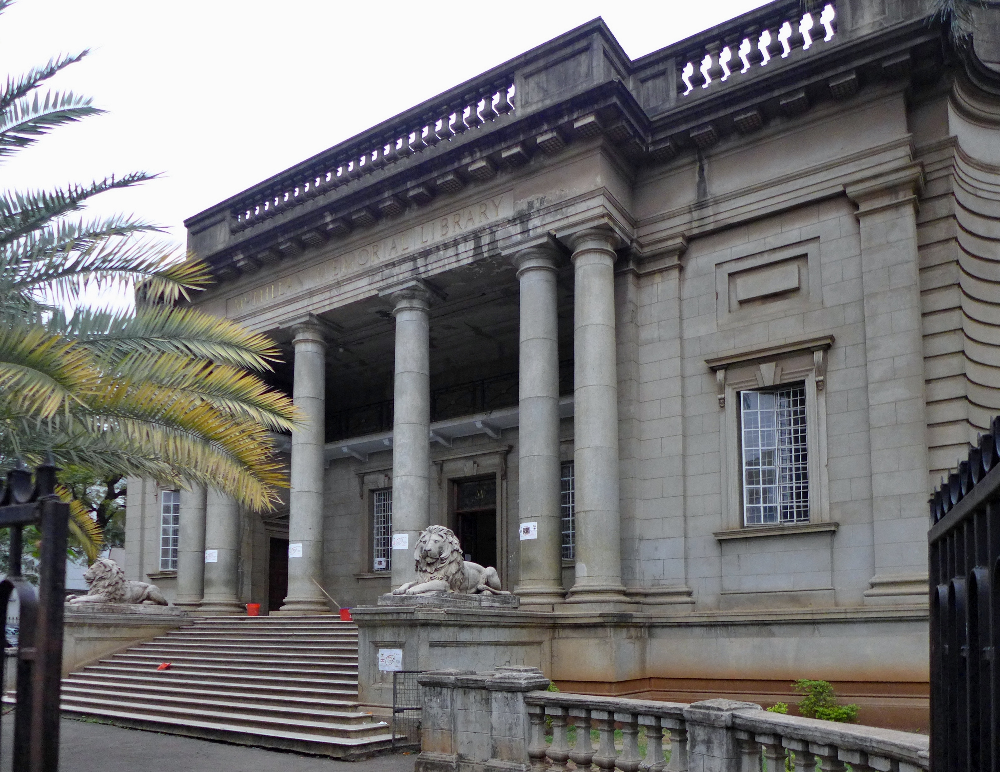
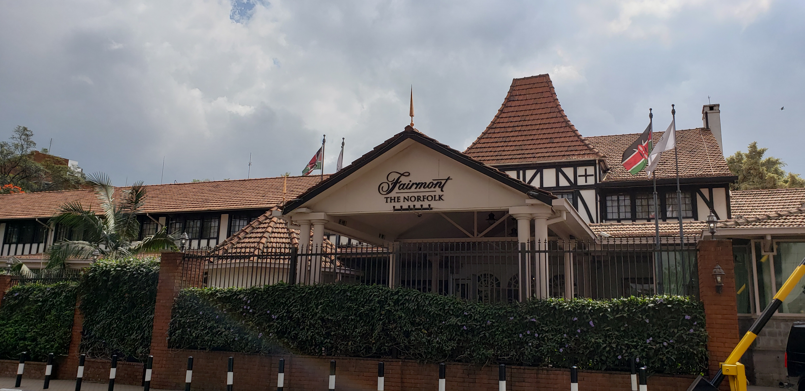
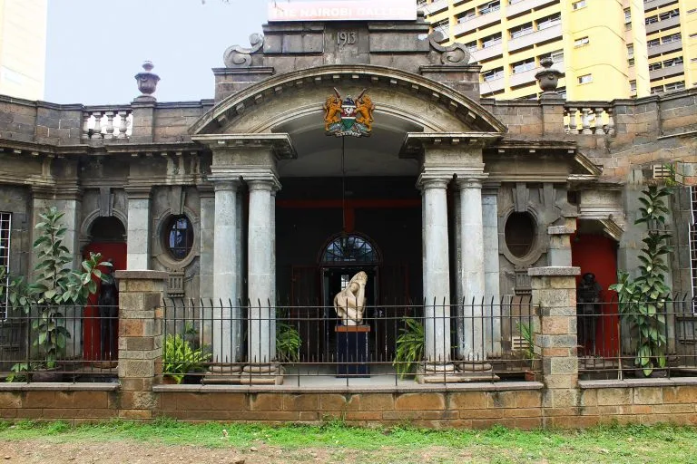

The Railway Town
As British administration took root, they sought to build permanent, imposing structures that reflected imperial power while adapting to the harsh equatorial climate. Nairobi, originally a swampy railway depot, rapidly transformed into a city defined by strict urban planning, heavy stone buildings, and European architectural imports.
Key Design Philosophies:
- Deep Verandas: To combat the intense tropical sun, colonial architects wrapped buildings in wide, shaded verandas. This kept the interior walls cool and provided sheltered outdoor living spaces.
- Elevated Foundations: Many structures were built on raised plinths or stone pillars to protect against flooding, dampness, and termites.
- Neoclassical Elements: Government and civic buildings often featured imposing columns, symmetrical facades, and grand entrance archways designed to project authority.
Iconic Landmarks
Kipande House
Nairobi CBD (Built 1913)
Originally designed as a railway warehouse. It is famous for its rough-hewn stone masonry, a towering clock face, and its historical role as the registration center where Africans were forced to carry the 'Kipande' identification.

McMillan Memorial Library
Nairobi CBD (Built 1931)
A perfect example of imposing neoclassical architecture. Flanked by massive stone lion statues, the library features grand granite steps, towering columns, and an expansive central reading room.

The Norfolk Hotel
Nairobi (Built 1904)
A landmark historic hotel featuring Tudor-style timber framing, stone masonry, and landscaped gardens. It served as a major social hub for early settler communities.

Nairobi Gallery (Old PC's Office)
Nairobi CBD (Built 1913)
Designed by government architect C. Rand-Overy. Built in a classical style with dressed stone walls, classical pilasters, and an octagonal central hall, this building was the administrative center of early Nairobi and represents 'Point Zero' from which all city distances were measured.
